“NarForum Forum Software” Documentation by “Gürbüz Uğurgül” v1.0
“NarForum Forum Software Documentation”
Created: 10/28/2024
By: Gürbüz Uğurgül
Email: narforumsoftware@gmail.com
Thank you for purchasing the forum software. If you have any questions that are beyond the scope of this help file, please feel free to email via my user page contact form here. Thanks so much!
Table of Contents
- Deploying The Project on IIS
- Development The Project
- How to Update Database?
- Setting up Admin Panel Settings
A) Deploying The Project on IIS - top
This documentation for windows server. If you know already what you do, you dont have to apply these steps for the installation. If you don't want to use Windows Server, You can try Docker option which doesn't exist the current version of the project. (So you have to make it yourself for now. I'm going to add this option for the next versions.)
A.1) Requirements
- Windows Server 2022
- Domain name
- Cloudflare account (Optional)
Note: Cloudflare is optional. I used it because of free SSL and caching features. It has more features that paid or free can be useful for your project. That's the easy part for our usage. It's optional, you don't have to use it for this part.
A.2) Windows Server Requirements - top
Narforum consists of three separate projects. These projects:- ASP.NET Core Web Api (.NET 8)
- Blazor Webassembly Standalone Application (NarForumAdmin) (.NET 8)
- Blazor Webassembly Interractive Global Application (NarForumUser) (.NET 8)
- Open Server Manager
- Click Add Roles and Features option at the Manage Menu
- Click Next, and choose Web Server(IIS) role.
- Click Next, and choose necessary components(The installed ones on NarForum Server) After these installations probably your server will be restarted:
- Web Server (IIS)
- Common HTTP Features
- Default Document
- Directory Browsing
- HTTP Errors
- Static Content
- Health and Diagnostics
- HTTP Logging
- Performance
- Static Content Compression
- Security
- Request Filtering
- Application Development
- WebSocket
- Common HTTP Features
- File and Storage Services
- Storage Services
- Management Tools
- IIS Management Console
- Web Server (IIS)
- Install Hosting Bundle
- Install URL Rewrite Module
- Download PostgreSQL
- Install PostgreSQL on the server and create server, user and password. We will use them in the connection string.
- Download GarnetServer (The installed version is win-x64-based-readytorun.zip file for NarForum software) Garnet is a remote cache-store also it's an Redis alternative. There is no installation, we are going to execute the executable file. But it's must always work on the server, if not the api won't work without it.
- (Optional) Also you can install Node.js and NPM to install Redis-Cli package. This tool provides control on the command line. Why Redis-Cli, because Garnet is also compatible with redis-cli as Redis alternative.
A.3) Configuring CloudFlare and Domain Name (Optional) - top
- Create an account for Cloudflare if it does not exist.
- Click Add a domain button. 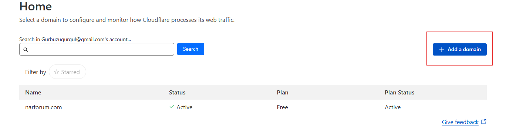
- Enter an existing domain.
- Open **DNS Records** and add records like table below:
- Cloudflare will give nameservers like below:
- Since the NarForum domain name is purchased from a different provider, I need to register the nameservers through that provider. I changed default the nameservers value with the nameservers are given by CloudFlare.
- Open SSL/TLS, and configure SSL/TLS which option is fit for you.
- Open Caching, and click the Purge Everything in Configuration module.
| Type | Name | Content (IPv4) |
|---|---|---|
| A | admin | XXX.XXX.XXX.XXX |
| A | api | XXX.XXX.XXX.XXX |
| A | @ | XXX.XXX.XXX.XXX |
| Type | Value |
|---|---|
| NS | xxx.ns.cloudflare.com |
| NS | xxx.ns.cloudflare.com |
A.4) Configuring Web Api - top
- Open NarForum Web Api project from Visual Studio, or any IDE that you used for it.
- In
Program.csfile, add your address as allowed origin for CORS and WebSockets: - Right click and click Publish option.
- Publish settings option like below: 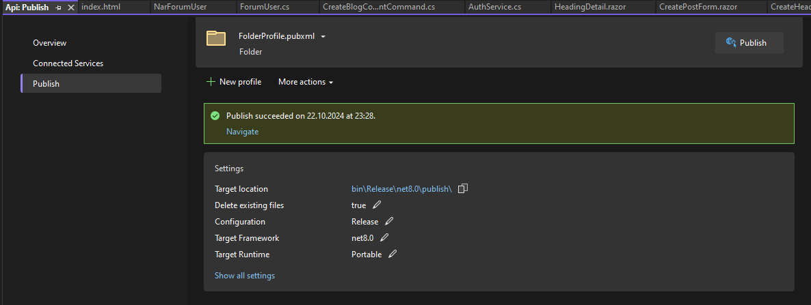
- Click the Publish button. When publish succeeded, click navigate copy all files from this folder for your server.
- Create a folder named
Publishin your Windows Server Desktop, and create new folder named api.domain-name.com folder inside Publish folder. Paste all files that copied from your local machine. - Open
appsettings.jsonfile from api.domain-name.com file, and change the two connection string according to PostgreSQL Server that installed Windows Server: - Open IIS Manager and right-click Sites and click Add Website button:
- Enter site name, example: api.domain-name.com
- Choose content directory which is your api files from Publish directory. Choose the api.domain-name.com folder.
- Binding options:
- Type: https
- IP Address(IPv4): XXX.XXX.XXX.XXX (your server IP Address for external that also used in Cloudflare)
- Port: 80
- Host name: api.domain-name.com
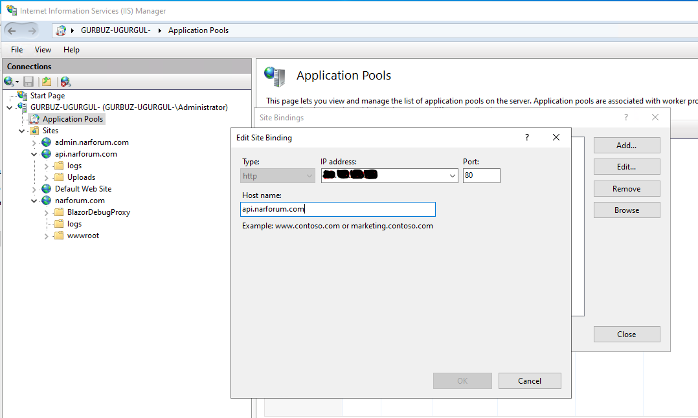
- Uncheck Start Website immediately for now.
- Click OK.
- Open Home panel in IIS Manager and click Server Certificates
- Click Create Self-Signed Certificate from the right panel.
- Give a name to this certificate, for example: CloudFlare-SelfSigned and choose Personal store.
- Click OK.
Right-Clickapi.domain-name.com from Sites tree menu.- Click **Edit Bindings..** button.
- Click binding to add https type of api.domain-name.com:
- Binding options:
- Type: https
- IP Address(IPv4): XXX.XXX.XXX.XXX (your server IP Address for external that also used in Cloudflare)
- Port: 443
- Host name: api.domain-name.com
- SSL certificate: Cloudflare-SelfSigned
- Before start this api, we need give permission to IIS Manager from content directory. Go Publish folder in Windows Server Desktop.
Right-ClickPublish folder, click Properties, open Security tab.- Edit Group or user names, add
IIS_IUSRSuser. - Give Read & Execute , List folder contents and Read permissions.
- Go back to IIS Manager, open Application Pools and
Right-Clickapi.domain-name.com and click Edit Application Pool.
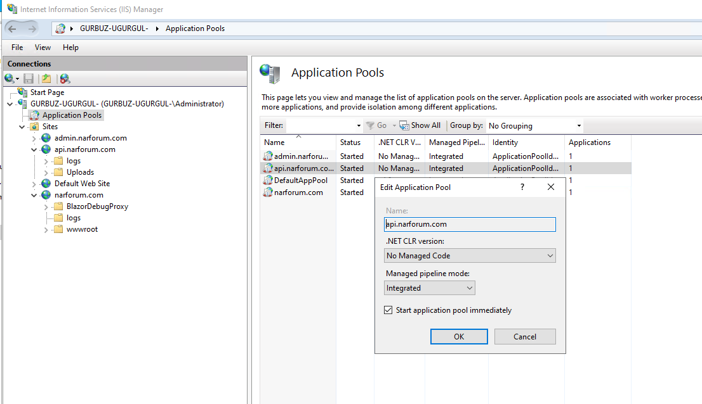
- Select No Managed Code as .NET CLR version.
- Click
OK. - Open IIS Manager Home panel, click Authentication
- Enable Anonymous Authentication
- Make sure GarnetServer is running on the server. If it does not then click GarnetServer .exe file to run.
- Open IIS Manager, select api.domain-name.com from Sites and click Start button.
- Let's check out https://api.domain-name.com/swagger. If you see swagger ui with no error everything is great. Also check if databases are created in PostgreSQL.
builder.Services.AddWebSockets(o => {
...
o.AllowedOrigins.Add("https://domain-name.com");
o.AllowedOrigins.Add("https://admin.domain-name.com");
});
builder.Services.AddCors(options =>
{
options.AddPolicy("all", builder => builder
.WithOrigins("...", "...", "https://domain-name.com", "https://admin.domain-name.com")
.AllowAnyHeader()
.AllowAnyMethod()
.AllowCredentials()
.SetIsOriginAllowed((host) => true)
);
...
{
...
"ConnectionStrings": {
"ForumDatabaseConnectionString": "Host=localhost;Database=db_forum;Username=postgres;Password=pwd;Port=5432;",
"ForumIdentityDatabaseConnectionString": "Host=localhost;Database=db_forum_identity;Username=postgres; Password=pwd;Port=5432;"
},
...
A.5) Configuring Admin Blazor WASM (NarForumAdmin) - top
- Open NarForumAdmin Blazor WASM Standalone project from Visual Studio, or any IDE that you used for it.
Right-clickand click Publish option.- Publish settings option like below: 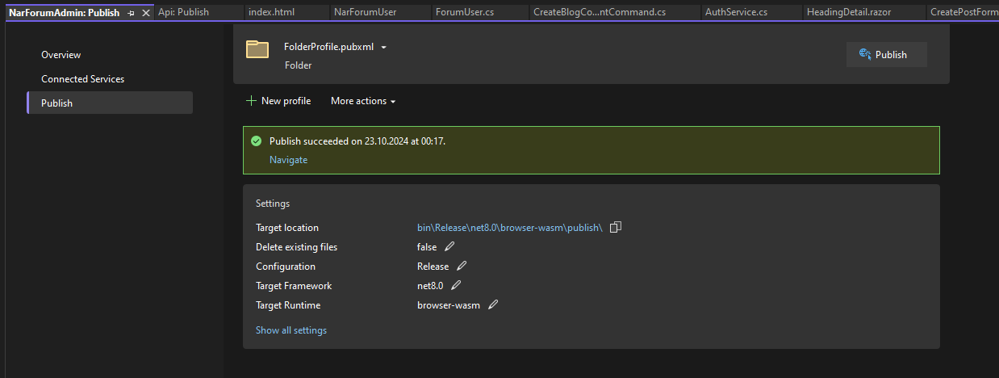
- Click the Publish button. When publish succeeded, click navigate copy all files from this folder for your server.
- Create a folder named Publish in your Windows Server Desktop, and create new folder named admin.domain-name.com folder inside Publish folder. Paste all files that copied from your local machine.
- Open
appsettings.jsonfile from admin.domain-name.com folder, and add your api urls: - Open IIS Manager and right-click Sites and click Add Website button:
- Enter site name, example: admin.domain-name.com
- Choose content directory which is your admin files from Publish directory. Choose the admin.domain-name.com folder.
- Binding options:
- Type: http
- IP Address(IPv4): XXX.XXX.XXX.XXX (your server IP Address for external that also used in Cloudflare)
- Port: 80
- Host name: admin.domain-name.com
- Uncheck Start Website immediately for now.
- Click OK.
Right-Clickadmin.domain-name.com from Sites tree menu.- Click
Edit Bindings..button. - Click binding to add https type of admin.domain-name.com:
- Binding options:
- Type: https
- IP Address(IPv4): XXX.XXX.XXX.XXX (your server IP Address for external that also used in Cloudflare)
- Port: 443
- Host name: admin.domain-name.com
- SSL certificate: Cloudflare-SelfSigned
- Open Application Pools and
Right-Clickadmin.domain-name.com and click Edit Application Pool. - Select No Managed Code as .NET CLR version.
- Click
OK. - Open IIS Manager, select admin.domain-name.com from Sites and click Start button.
- Let's check out https://admin.domain-name.com
{
"ApiBaseUrl": "https://api.domain-name.com/api",
"HubBaseUrl": "https://api.domain-name.com"
}
A.6) Configuring User Blazor WASM Hosted (NarForumUser) - top
- Open NarForumUser project from Visual Studio, or any IDE that you used for it.
Right-clickand click Publish option.- Publish settings option like below: 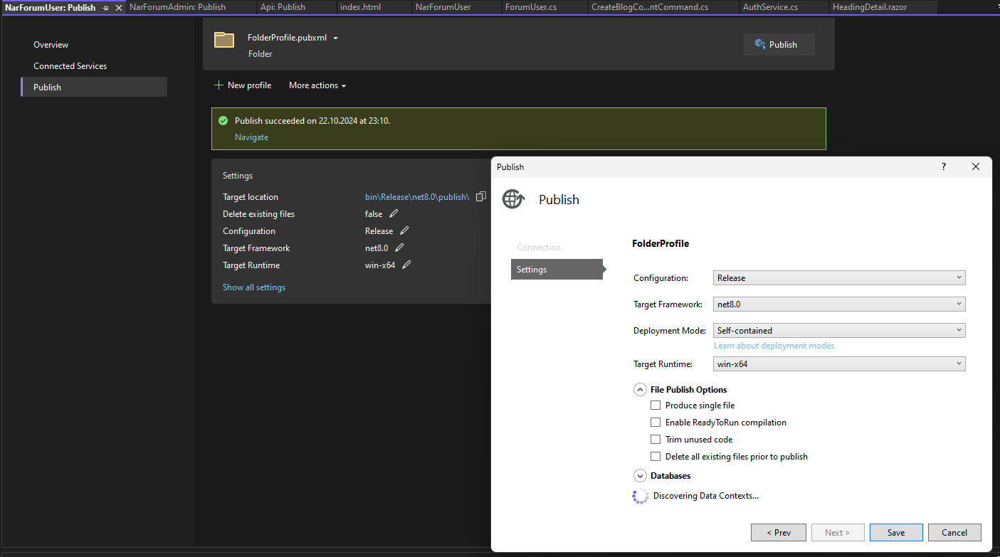
- Click the Publish button. When publish succeeded, click navigate copy all files from this folder for your server.
- Create a folder named Publish in your Windows Server Desktop, and create new folder named domain-name.com folder inside Publish folder. Paste all files that copied from your local machine.
- Open
appsettings.jsonfile from domain-name.com folder, and add your api urls: - Open wwwroot in **domain-name.com** folder and edit
appsettings.jsonfile too: - Open IIS Manager and right-click Sites and click Add Website button:
- Enter site name, example: admin.domain-name.com
- Choose content directory which is your admin files from Publish directory. Choose the domain-name.com folder.
- Binding options:
- Type: http
- IP Address(IPv4): XXX.XXX.XXX.XXX (your server IP Address for external that also used in Cloudflare)
- Port: 80
- Host name: domain-name.com
- Uncheck Start Website immediately for now.
- Click OK.
Right-Clickdomain-name.com from Sites tree menu.- Click
Edit Bindings..button. - Click binding to add https type of domain-name.com:
- Binding options:
- Type: https
- IP Address(IPv4): XXX.XXX.XXX.XXX (your server IP Address for external that also used in Cloudflare)
- Port: 443
- Host name: domain-name.com
- SSL certificate: Cloudflare-SelfSigned
- Open Application Pools and
Right-Clickdomain-name.com and click Edit Application Pool. - Select No Managed Code as .NET CLR version.
- Click
OK. - Open IIS Manager, select domain-name.com from Sites and click Start button.
- Let's check out https://domain-name.com
{
"Logging": {
"LogLevel": {
"Default": "Information",
"Microsoft.AspNetCore": "Warning"
}
},
"AllowedHosts": "*",
"ApiBaseUrl": "https://api.narforum.com/api",
"HubBaseUrl": "https://api.narforum.com",
"BaseUrl": "https://domain-name.com"
}
{
"Logging": {
"LogLevel": {
"Default": "Information",
"Microsoft.AspNetCore": "Warning"
}
},
"ApiBaseUrl": "https://api.domain-name.com/api",
"HubBaseUrl": "https://api.domain-name.com",
"BaseUrl": "https://domain-name.com",
"SiteName": "Domain-Name",
"Locale": "en_EN",
"HrefLang": "en",
"ContentLanguage": "en",
"Description": "Your forum website description"
}
B) Development The Project - top
In this section, if you want to make different additions to the project independently of us, you will find information on how you can do this.
B.1) Create Databases using EF Core Migration - top
We need to first create databases in the development environment. There will be two databases to which the project will be connected. These are thedb_forum and db_forum_identity databases.
db_forum updates should be applied in the Persistence layer, and db_forum_identity updates should be applied in the Identity layer.
- Choose Api as start-up project 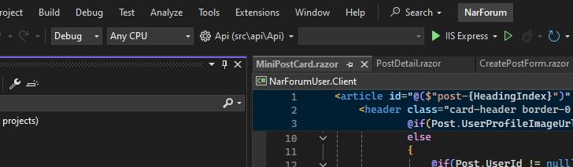
- Open package manager console and choose
src\Infrastructure\Identityas Default Project
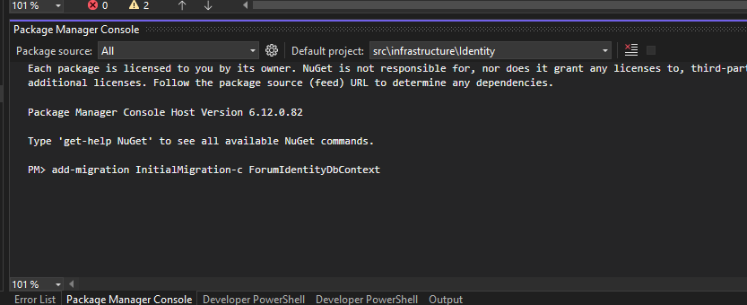
- enter this command
add-migration InitialMigration-c ForumIdentityDbContext - after that
update-database -Context ForumIdentityDbContext - choose
src\Infrastructure\Persistenceas Default Project - enter this command
add-migration InitialMigration-c ForumDbContext - after that
update-database -Context ForumDbContext
After these operations, both databases should have been created successfully. If you still receive an error and cannot find a solution, please contact us via CodeCanyon or narforumsoftware@gmail.com.
B.2) Requirements for Setting up your Developer Environment - top
The following programs must be installed on your computer.- .NET 8 SDK (ASP.NET Core)
- Visual Studio Code or Visual Studio 2022(Recommended)
- PostgreSQL
- GarnetServer (It's a redis alternative as a remote cache-store) (Download it from here.)
B.3) Running the project in the development environment - top
There are 3 separate projects in the project:- Api
- NarForumAdmin
- NarForumUser
Before running these projects, you have to run GarnetServer. Because the API project can work depending on GarnetServer. This is a must as the API caches with Garnet Server at regular intervals in the background.
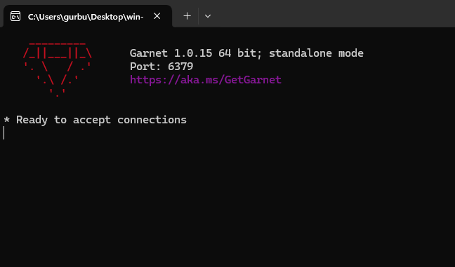Now that Garnet Server is working as seen in the picture above, we can run our projects.
As the developer of the project, I do not use Visual Studio when running projects. I generally run projects using windows terminal. In this way, I do not create unnecessary load on my computer and the startup process is faster.
So how do we do this? For example, to run the API project, let's first copy the path of the directory it is in:- Copy API Folder path
- Open the terminal (example: windows terminal)
- Enter this command cd C:\Users\gurbu\source\repos\Forum\Api (The project directory path will be different for you.)
- Enter this command dotnet run
The Api project worked as seen in the picture below:
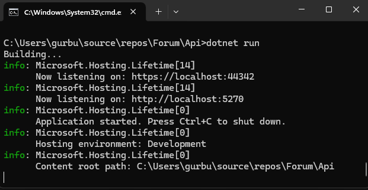We can also understand that the API project is running from here https://localhost:44342/swagger/index.html.
Likewise, we can run the NarForumAdmin and NarForumUser projects by following the steps we did above:
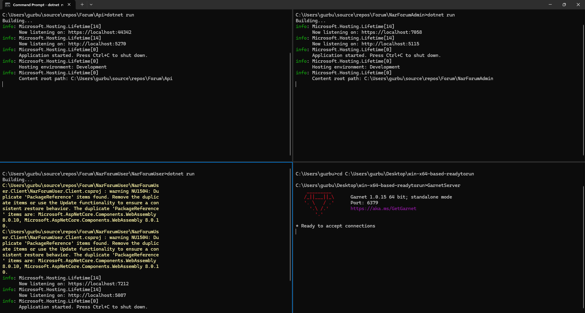B.4) API Update - top
In my case, there is a problem about creating a heading. The problem is when we are creating a heading as a response we got just GUID value. But we can also encounter error, however we cannot understand what is the error what we got. In general, we use ApiResponse for create, update and remove commands because of that. ApiResponse:
public class ApiResponse
{
public bool IsSuccess { get; set; } = true;
public string Message { get; set; } = string.Empty;
public object? Result { get; set; }
}
Firstly, we are going to update a feature that called CreateHeadingCommand from Application project. (Application > Features > Heading > Commands > CreateHeading > CreateHeadingCommand.cs)
The pattern that used is CQRS pattern. We use it via MediatR library. So if you have no idea about this pattern, we suggest you should look at first what is CQRS and why used in the projects. It's easy and it provides us easier manageability and changeability on the development side. If you want to add new feature on the project, you should definitely follow CQRS pattern for it on this project.
Of course, CQRS was not implemented perfectly in this project. Especially in the Identity layer, the logic part was carried out mostly via Repository. We can say that CQRS was used only on models connected to the persistence layer.
If we opened the CreateHeadingCommand file. Let's make the response type returned ApiResponse instead of Guid.
public class CreateHeadingCommand : IRequest<ApiResponse>
{
public string? Title { get; set; }
public string? Description { get; set; }
public Guid CategoryId { get; set; }
public string? Content { get; set; }
}
Now let's update the handler class connected to this class as follows:
namespace Application.Features.Heading.Commands.CreateHeading
{
public class CreateHeadingCommandHandler : IRequestHandler<CreateHeadingCommand, ApiResponse>
{
private readonly IMapper _mapper;
private readonly IHeadingRepository _HeadingRepository;
private readonly IPostRepository _PostRepository;
private readonly ICategoryRepository _CategoryRepository;
private readonly IUserService _userService;
public CreateHeadingCommandHandler(IMapper mapper, IHeadingRepository HeadingRepository, IPostRepository PostRepository, IUserService userService, ICategoryRepository categoryRepository)
{
_mapper = mapper;
_HeadingRepository = HeadingRepository;
_PostRepository = PostRepository;
_userService = userService;
_CategoryRepository = categoryRepository;
}
public async Task<ApiResponse> Handle(CreateHeadingCommand request, CancellationToken cancellationToken)
{
ApiResponse response = new ApiResponse();
try
{
var user = await _userService.GetCurrentUser();
// convert to domain entity object
var Heading = _mapper.Map<Domain.Heading>(request);
Heading.UserName = user.UserName;
if (user.Id != null)
{
Heading.UserId = new Guid(user.Id);
}
var category = await _CategoryRepository.GetByIdAsync(Heading.CategoryId);
// add to database
await _HeadingRepository.CreateAsync(Heading);
if (request.Content != null)
{
Domain.Post headingPost = new Domain.Post
{
HeadingId = Heading.Id,
Content = request.Content,
UserName = user.UserName,
};
if (user.Id != null)
{
headingPost.UserId = new Guid(user.Id);
}
await _PostRepository.CreateAsync(headingPost);
Heading.MainPostId = headingPost.Id;
Heading.LastPostId = headingPost.Id;
await _HeadingRepository.UpdateAsync(Heading);
await _HeadingRepository.UpdateHeadingWhenCreatePost(Heading.Id, headingPost.UserName, headingPost.UserId.Value, headingPost.Id);
await _CategoryRepository.UpdateCategoryWhenCreatePost(Heading.CategoryId, headingPost.UserName, headingPost.UserId.Value, Heading.Id, headingPost.Id);
}
else
{
response.Message = "The content is cannot be null or empty";
response.IsSuccess = false;
return response;
}
if (Heading.Id != null && category != null)
{
await _CategoryRepository.IncreaseHeadingCounter(Heading.CategoryId);
await _HeadingRepository.IncreasePostCounter(Heading.Id);
await _CategoryRepository.IncreasePostCounter(Heading.Id);
await _userService.IncreaseHeadingPostCounter(user.Id);
}
response.Message = "The heading is created successfully";
}
catch (Exception ex)
{
response.Message = ex.Message;
response.IsSuccess = false;
}
return response;
}
}
}
Okay, let's update the controller named HeadingsController:
[HttpPost]
public async Task<ApiResponse> Create(CreateHeadingCommand command)
{
var response = await _mediator.Send(command);
return response;
}
Let's run our project if we don't get any errors. We can move on to updates on UI projects.
UI projects communicate with the API through the ServiceClient class. Instead of writing this class ourselves, we generate it with a tool called nswag. (for more detail: NSwag
There is a nswag file in both projects(NarForumUser, NarForumAdmin). All we need to do is run clientsettings from the Services > Base folder, then click the Create local Copy button and then click the Generate button. After this process, ServiceClient.cs file will be updated. We have to just update our services that used the client service.
Let's open Contracts folder in the UI projects and update IHeadingService class like below:
public interface IHeadingService
{
// queries
...
// commands
Task<ApiResponseVM> CreateHeading(HeadingVM heading);
...
}
After that, open Services folder and update HeadingService class like below:
public async Task<ApiResponseVM> CreateHeading(HeadingVM post)
{
try
{
var createHeadingCommand = _mapper.Map<CreateHeadingCommand>(post);
var response = await _client.HeadingsAsync(createHeadingCommand);
return _mapper.Map<ApiResponseVM>(response);
}
catch (ApiException ex)
{
return new ApiResponseVM
{
IsSuccess = false,
Message = ex.Message,
};
}
}
That's it, we can use it this method in our blazor pages and components.
B.5) Fast Running the Project (OPTIONAL) - top
I wanted to add a script that I use myself. Thanks to this script, you can run the project much faster in the development environment. You will directly see a 4-panel Windows terminal screen. A C# script I wrote just to save time.
Before use the script, you have to change directories with yours, then you can use it:
using System;
using System.Diagnostics;
namespace TerminalConfigurator
{
class Program
{
static void Main(string[] args)
{
string[] directories = new string[]
{
@"C:\Users\gurbu\source\repos\Forum\Api",
@"C:\Users\gurbu\source\repos\Forum\NarForumAdmin",
@"C:\Users\gurbu\source\repos\Forum\NarForumUser\NarForumUser",
@"C:\Users\gurbu\Desktop\win-x64-based-readytorun",
};
OpenWindowsTerminalWithSplitPanes(directories);
}
static void OpenWindowsTerminalWithSplitPanes(string[] directories)
{
try
{
string arguments = $"-d \"{directories[0]}\" cmd /k \"dotnet run\"";
arguments += $" ; split-pane -V -d \"{directories[1]}\" cmd /k \"dotnet run\"";
arguments += " ; move-focus left";
arguments += $" ; split-pane -H -d \"{directories[2]}\" cmd /k \"dotnet run\"";
arguments += " ; move-focus right";
arguments += $" ; split-pane -H -d \"{directories[3]}\" cmd /k \"GarnetServer\"";
ProcessStartInfo psi = new ProcessStartInfo
{
FileName = "wt.exe",
Arguments = arguments,
UseShellExecute = true,
CreateNoWindow = false
};
Process.Start(psi);
}
catch (Exception ex)
{
Console.WriteLine($"An error occurred while opening Windows Terminal with split panes: {ex.Message}");
}
}
}
}
C) How to update database? - top
EF Core is used on the database side of the forum software. If you want to make any changes to the DB, you can learn how to do it in this section.
NOTE: If you are considering making a critical change to the database, I strongly recommend that you backup your existing database beforehand.
Let's proceed with an example case. I did not add the fields required to store the PostCounter and HeadingCounter values of the users to the ForumUser table before. However, I need these fields now, so we need to update the existing database.
We make updates to the database code first. That is, we do not write SQL, we make the necessary changes using EF Core. First, we need to open the ForumUser class that we will modify. The classes representing the database tables in the project are located in the Domain layer. However, The classes used for the Persistence layer are located there. The classes defined for the Identity layer are located in the Models folder in the Identity layer. The distinction here is made intentionally. The parts not related to Identity are defined as models in the Domain layer. As a result, the ForumUser table is in the Models folder in the Identity layer.
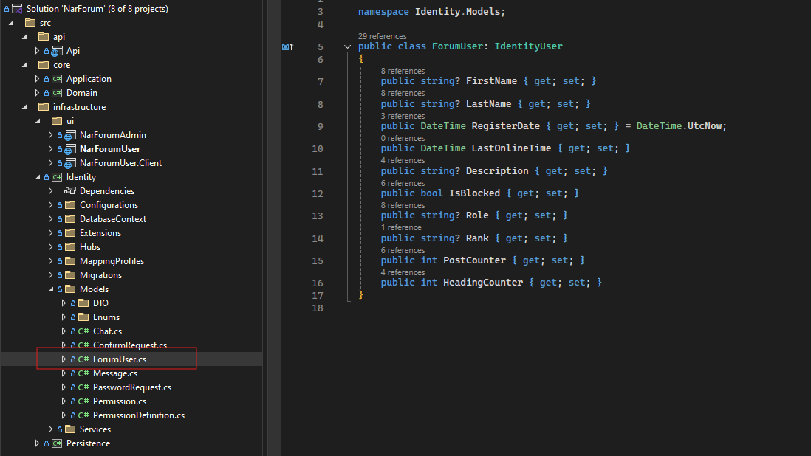Let's open that class and make the following additions:
public class ForumUser: IdentityUser
{
public string? FirstName { get; set; }
public string? LastName { get; set; }
...
public int PostCounter { get; set; }
public int HeadingCounter { get; set; }
}
After adding the HeadingCounter and PostCounter fields, we need to create ef migrations:
- Open Package Manager Console on Visual Studio (View > Other Windows > Package Manager Console)
- Choose Identity as Default project
- Set Api as start up project
- Enter this command:
add-migration Id5 -c ForumIdentityDbContextMy last migration was [DATESTAMP]_Id4. So new migration name should be Id5 - After build succeeded, check your migration.
- Let's update local db in development environment.
- Enter this command:
update-database -Context ForumIdentityDbContext - Check your local database from pgAdmin. Look at your db_forum_identity database, find the table named Users. (Schemas > public > Tables > Users) Everything looks good, the update worked well on local db.
- Let's update our API on the server.
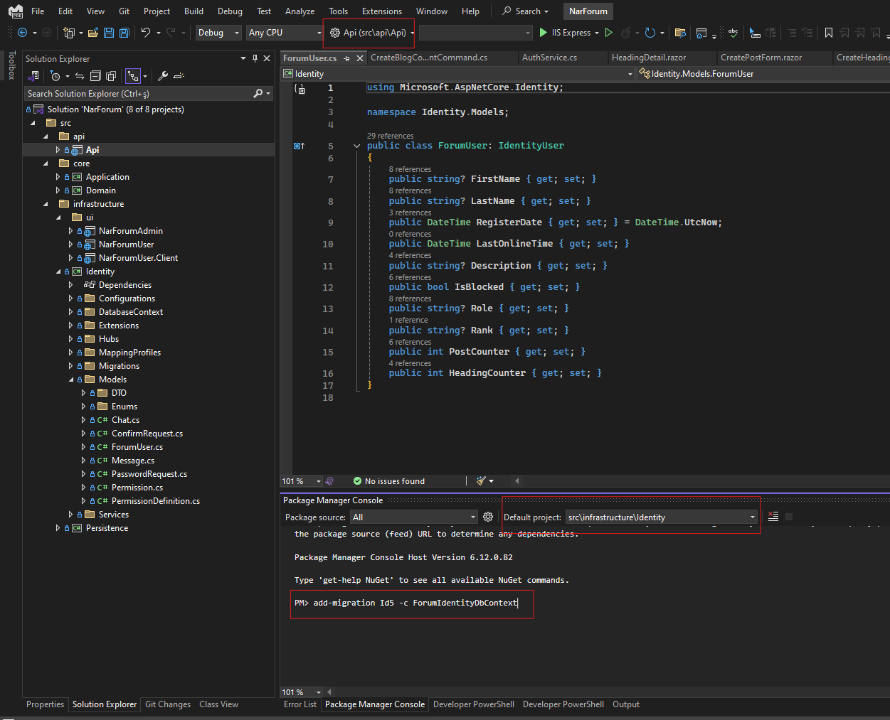
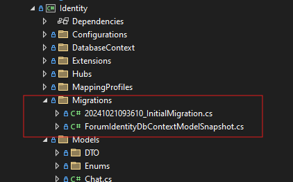
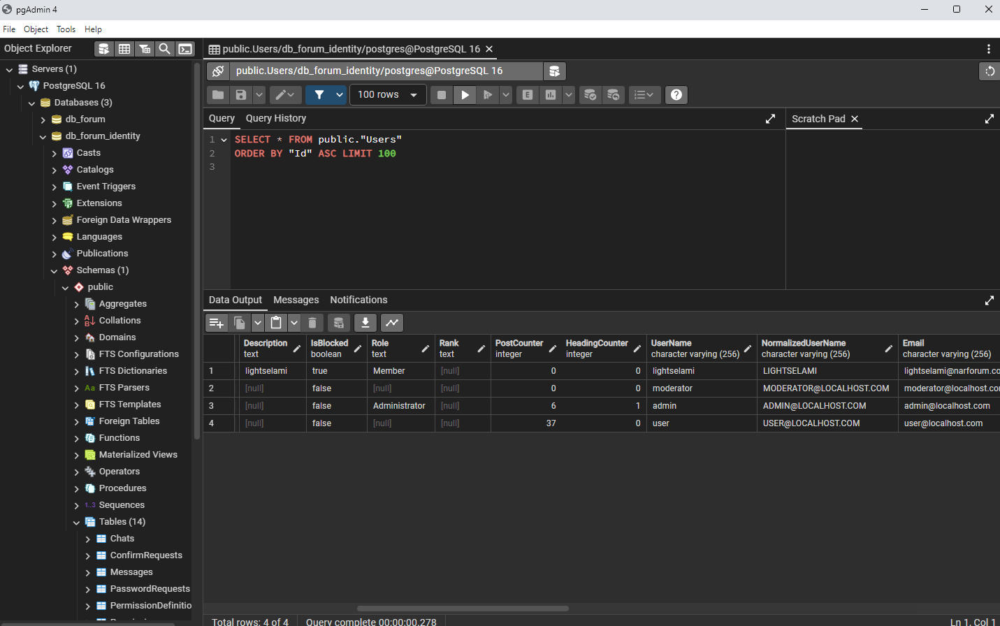
D) Setting up Admin Panel Settings - top
Log in to the admin panel. On initial installation, admin user information is as follows by default:
For security purposes, you need to change this information afterwards.
- email: admin@localhost.com
- password: P@ssword1
D.1) Setting up General Settings - top
The settings required for the forum are in the Settings section. In this section, you can upload your forum address, favicon and logo, if any.
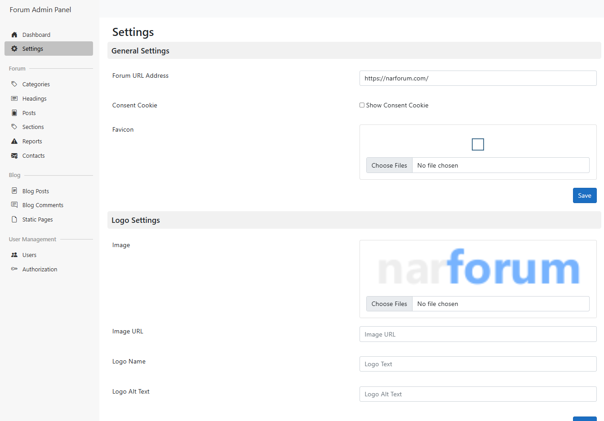D.2) Setting up SMTP Settings - top
It is very important to adjust SMTP settings. These settings are necessary for features such as "Refresh Password", "Email Confirmation", "Contact" to work correctly.
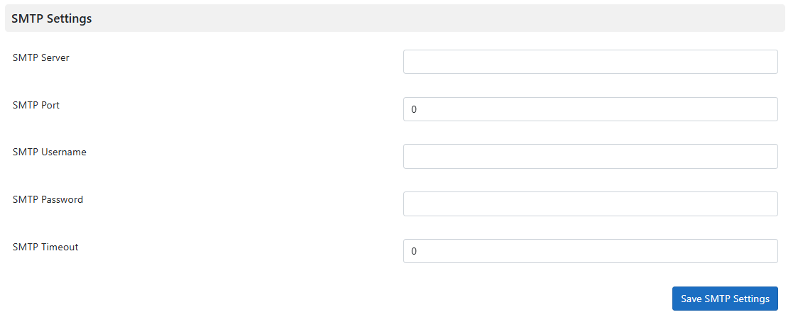D.3) Setting up Administrator Permissions - top
After the installation phase or in the development environment, all administrator permissions must be activated manually. First, open the Authorization page via the admin panel and then open the Permissions tab. Click the Refresh Permissions button. After all required permissions are listed, select the Admin role and activate all roles with the checkbox.

Once again, thank you so much for purchasing this forum software. As I said at the beginning, I'd be glad to help you if you have any questions relating to this forum software. No guarantees, but I'll do my best to assist. If you have a more general question relating to the themes on CodeCanyon, you might consider visiting the forums and asking your question in the "Item Discussion" section.
Gürbüz Uğurgül